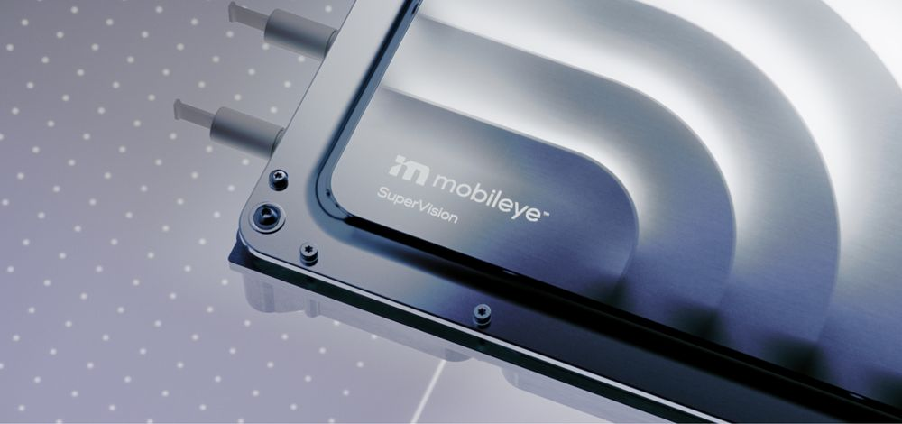

Mobileyeの新しいECUシリーズの中心には、2つのEyeQ6Hチップと統合MCUを搭載した共通プライマリボードがある。このAI搭載ソリューション群は、運転支援から自動運転までのスペクトラム全体でモジュラリティを提供する。
Mobileye EyeQチップは、ADASを動かすことで道路安全に貢献してきた。ビジョンファーストのアプローチに基づき、自動緊急ブレーキやレーンキープなどの機能を支えている。2億個以上のチップが搭載された実績を背景に、Mobileyeはその技術をさらに進め、スケーラビリティを持つECUシリーズへ展開する。
スケーラブルでモジュラーな先進運転プラットフォームを作る大きな課題は、中核部で柔軟性と効率を両立することである。Mobileye EyeQ6Hは、固定機能処理と汎用処理を組み合わせる独自アーキテクチャによって、そのトレードオフを小さくするよう設計されている。
EyeQ6HはMobileyeが設計・製造するボード上に配置される。これにより自動車メーカーのニーズに対応し、統合プロセスを滑らかにし、製品ロードマップへの適応性を高める。
共通プライマリボードは、2つのEyeQ6Hと統合MCUを備える。コンパクトだが強力なこのアーキテクチャは、自動車メーカーに自動運転ソリューションの基盤を提供し、将来のハードウェア・ソフトウェア調整だけで機能を拡張できるようにする。
ベース構成はMobileye SuperVisionであり、11台のカメラと任意のレーダーに接続される。SuperVisionはhands-off/eyes-onのプラットフォームで、継続的なソフトウェア更新を通じてnavigate-on-pilotなどの機能を提供する。
SuperVision ECUにセカンダリ計算ボードを追加し、設計の大部分を維持することで、Mobileye Chauffeurが導入される。これは消費者車両向けのhands-off/eyes-offプラットフォームであり、カメラに加えてレーダーとLiDARのネットワークを使い、ODD内でeyes-off運転を可能にする。
Mobileye Driveは、さらに多くの構成要素をプライマリボード周辺に追加し、最も大きな要素であるドライバーを取り除く。MaaS向けに設計され、プライマリ・セカンダリボード上の合計4つのEyeQ6H、最大13台のカメラ、イメージングレーダー、LiDARを備える。
3つのECUを並べると、SuperVision、Chauffeur、Driveが共通のハードウェア・ソフトウェア基盤を共有していることが分かる。これは、検証済み基盤を使い回しながらADASからAVへ拡張する、Mobileyeのモジュラー戦略である。